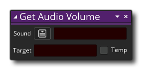
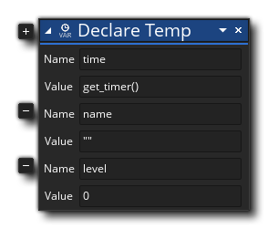

Um Verhalten zu Objekten hinzuzufügen, können Sie Ihren Code mithilfe von Aktionen aus den verschiedenen Bibliotheken erstellen, die Ihnen über die Aktionstoolbox zur Verfügung stehen. Zunächst müssen Sie ein neues Drag & Drop-Projekt erstellen und dann ein neues Objekt erstellen (Sie können dem Objekt bei Bedarf auch ein Sprite zuweisen). In Ihrem neuen Objekt können Sie beginnen, hinzufügen Veranstaltungen und in den Ereignissen Ihre DnD™ Code Aktionen hinzuzufügen.
Beachten Sie, dass beim Hinzufügen eines neuen Ereignisses ein "Code" -Fenster mit einer Registerkarte für das jeweilige Ereignis geöffnet wird (siehe Abbildung oben), und Sie können nun eine beliebige Aktion aus der Toolbox auf der rechten Seite in den Aktionsblock ziehen des Codefensters. Es ist zwar richtig, dass Sie eine Aktion hinzufügen können, aber das bedeutet nicht, dass sie alle funktionieren oder dass das Projekt mit ihnen kompiliert wird. Einige Aktionen erfordern die Verwendung von Variablen, während andere - wie die Aktionen zum Zeichnen - nur funktionieren, wenn sie in einem bestimmten Ereignis verwendet werden. Woher weißt du, welche zu verwenden? Nun, im Allgemeinen ist es einfach eine Frage der Logik... Wenn eine Aktion eine Variable benötigt und wir noch keine definiert haben, sollten wir sie erst verwenden, wenn wir eine Aktion hinzugefügt haben, um die Variable zu erstellen.
Wenn Sie eine Aktion aus der Toolbox in den Hauptarbeitsbereich von Action Block ziehen, wird sie erweitert, um Ihnen die verfügbaren Parameter (Argumente) anzuzeigen, die Sie ausfüllen und ändern können, um das Verhalten festzulegen. In der Abbildung unten haben wir die Aktion " Variable zuweisen" aus der Toolbox- Common- Bibliothek in den Aktionsblock-Arbeitsbereich gezogen: 
Sie können sehen, dass die neue Aktion auch in der Kurzform des linken Fensters des Codefensters angezeigt wird. Diese Liste von Aktionen, die als Aktion Übersicht bezeichnet wird, kann angeklickt werden, um schnell zu dieser Aktion zur Bearbeitung zu navigieren. Sie können dem Ereignis bei Bedarf weitere Aktionen hinzufügen, wobei jede neue Aktion mit der vorherigen "verkettet" wird, um den Fluss des von Ihnen erstellten DnD™ -Codes anzuzeigen. Beachten Sie, dass der Bereich, in dem Sie weitere Aktionen ablegen können, unterhalb der ersten Aktion für Sie hervorgehoben wird. Je nach der Aktion, die Sie verwenden, werden verschiedene Bereiche hervorgehoben, um anzuzeigen, wo in der Kette Sie sie hinzufügen können: 
Wenn Sie dem Arbeitsbereich Aktionen hinzufügen, werden diese mit den oben genannten Aktionen "verkettet", sodass Sie sehen können, wie der DnD™ -Code fließt, wobei eine Aktion zu einer anderen führt. Im Übersichtsfenster werden sie in Kurzform und in der Reihenfolge der Ausführung angezeigt: 
Einige Aktionen werden Codes in einer separaten Kette weg von der Hauptströmung - Dinge wie, wenn eine Unter Kette von Aktionen erstellen, wenn die richtigen Bedingungen, bevor Sie fortfahren mit der Hauptkette erfüllt auftreten soll: 
Beachten Sie, dass bei der Verwendung von Aktionen, die einen Seitenkettenblock wie diesen haben können, die Aktion zwei Bereiche zum Löschen weiterer Aktionen hervorgehoben hat: Einer unterhalb der Aktion als normal und einer rechts neben der Aktion, um anzuzeigen, dass Sie eine erstellen möchten separater Aktionsblock, der ausgeführt wird, wenn die Bedingung der ersten Aktion zurückgegeben wird true: 
Sie können die Position von Aktionen innerhalb der Kette ändern, indem Sie einfach auf klicken  und ziehen Sie sie an die neue Position, die Sie benötigen, und wenn Sie für eine Sekunde klicken und halten und dann die Maus bewegen, können Sie die Aktion innerhalb des Arbeitsbereichs verschieben, während Sie ihren Platz innerhalb der Aktionsblockkette beibehalten.
und ziehen Sie sie an die neue Position, die Sie benötigen, und wenn Sie für eine Sekunde klicken und halten und dann die Maus bewegen, können Sie die Aktion innerhalb des Arbeitsbereichs verschieben, während Sie ihren Platz innerhalb der Aktionsblockkette beibehalten.
Das sind die Grundlagen für die Verwendung des Drag & Drop-Code-Editors. In den folgenden Abschnitten werden jedoch weitere wichtige Details erläutert:
Es ist wichtig zu beachten, dass viele Aktionen eine Variable "target" anbieten, die als "Temporary" gekennzeichnet werden kann, zum Beispiel: 
Dies bedeutet, dass Sie eine Zielvariable angeben können, die den von der Aktion zurückgegebenen Wert enthält. In der obigen Beispielaktion gibt die Aktion das Volumen der ausgewählten Audio-Ressource zurück, sodass Sie eine Zielvariable bereitstellen, die diesen Wert enthält, damit Sie später darauf verweisen können. Nun müssen diese Zielvariable zuvor erklärt wurden entweder unter Verwendung von Variablen zuweisen oder (die eine Instanz Variable erzeugt) Deklarieren temporäre Variable (die eine lokale temporäre Variable erstellt), aber wenn man die „Temp“ Option aktivieren, dann können Sie einfach Fügen Sie einen Variablennamen hinzu, und die Aktion erstellt diese Variable und legt sie so fest, dass sie den Rückgabewert für Sie enthält (Erstellen einer temporären lokalen Variablen). Alle Aktionen, danach verwendet wird, können nun Zugriff auf den Wert in den temporären Variablen, sondern nur innerhalb des gleichen Ereignisses oder Script. Temporäre Variablen sind nur in dem Bereich verfügbar, in dem sie erstellt wurden. Ausführlichere Informationen zu Variablen und Variablenumfang finden Sie hier.
Nicht nur Variablen Bereiche (Zielvariablen siehe oben), Aktionen zu verschiedenen Bereichen haben kann. In der Tat können fast alle Aktionen einen anderen Arbeitsumfang erhalten, als in dem Dropdown-Fenster, das in der Aktion selbst geöffnet ist, wie hier gezeigt:
Sie können den Gültigkeitsbereich für alle weiteren Aktionen auch über die spezielle Aktion Anwenden auf festlegen. Weitere Informationen zu dieser Funktion der DnD™ -Aktionen finden Sie hier:
Wenn Sie mit Drag & Drop arbeiten, müssen Sie den verschiedenen Eingabefeldern der Aktionen Variablen und Ausdrücke hinzufügen. Während Sie dies tun, wird das Auto Complete-Fenster jedoch oft geöffnet, um Ihnen zu helfen:
In diesem Popup-Fenster werden alle in GML ( GameMaker Language) eingebauten Variablen, Konstanten und Funktionen sowie alle Ressourcen aufgelistet, die die Anfangsbuchstaben Ihrer Eingabe enthalten. Es kann verwendet werden, um die Ressource oder Variable, die Sie für die Aktion benötigen, schnell zu finden, ohne alles selbst eingeben zu müssen. Wenn beispielsweise alle Räume mit dem Präfix "rm_" versehen sind, wird das Auto-Vervollständigen-Fenster mit allen Ressourcen angezeigt, die mit "rm_" beginnen. Beachten Sie, dass alle eingebauten Variablen, die im Auto-Vervollständigen-Fenster angezeigt werden, überall dort verwendet werden können, wo eine Variable oder ein Ausdruck in einer Aktion erwartet wird, wie dies bei den meisten GML-Funktionen der Fall ist.
Manchmal, wenn Sie eine Aktion verwenden, sehen Sie ein kleines Plus-Symbol
auf die Seite. Dies bedeutet, dass Sie die Aktion erweitern können , um zusätzliche Aufgaben auszuführen oder weitere Argumente zu verwenden. Wenn Sie sich beispielsweise die Aktion " Temporäre Variablen deklarieren" ansehen, können Sie sehen, dass dies der Fall ist
Wenn Sie auf das Symbol klicken, wird die Aktion erweitert und Sie können mehr Variablen deklarieren, wodurch es einfacher und schneller wird, mehrere Variablen gleichzeitig zu definieren. 
Das Symbol kann auch für Aktionen verwendet werden, für die optionale Argumente erforderlich sind, wie z. B. die Aktion Wählen, mit der Sie verschiedene Rückgabewerte hinzufügen können:
Wenn Sie an Ihrem DnD™ -Code arbeiten, können Sie mit der rechten Maustaste klicken
auf der Aktion (oder auf dem Text in der Auswahlliste auf der linken Seite), um das folgende Menü zu öffnen:
Dieses Menü hat folgende Optionen:
- Ausschneiden / Kopieren / Einfügen: Damit können Sie jede ausgewählte Aktion ausschneiden, kopieren oder einfügen. Beachten Sie, dass Sie verwenden können
+
außerhalb der Aktionen und ziehen oder verwenden
/
+
- Deaktivieren: Dieser Befehl wird die Aktion (oder Aktionen) ausgewählt deaktivieren. Wenn eine Aktion deaktiviert ist, ist sie immer noch im Arbeitsbereich sichtbar, wird aber beim Kompilieren des Spiels nicht ausgeführt. Auf diese Weise können Sie Aktionen zum Testen und Debuggen hinzufügen / entfernen. Das Bild unten zeigt einige DnD™ -Code mit deaktivierten Aktionen:
Sie können sehen, dass die Aktionen " If Score " und " Go To Next Room "wurden deaktiviert und werden daher übersprungen, wenn das Spiel getestet oder kompiliert wird.
- Haltepunkt umschalten: Dieser Befehl schaltet einen Haltepunkt für die ausgewählte Aktion ein oder aus. Ein Haltepunkt ist einfach ein Punkt im DnD™ -Code, an dem der Debugger stoppen sollte, wenn das Spiel im Debug-Modus ausgeführt wird. Eine Aktion mit einem zugewiesenen Haltepunkt wird hervorgehoben, wie in der Abbildung unten gezeigt. If Health "Aktion wurde als Haltepunkt festgelegt):
- Pan: Bei Auswahl dieser Option wird der Arbeitsbereich schwenken und zoomen auf die ausgewählte Aktion zu konzentrieren.
- Hilfe anzeigen ...: Diese Option öffnet das Handbuch auf der Seite, die der aktuell ausgewählten DnD™ -Aktion zugeordnet ist, damit Sie überprüfen können, wie es funktioniert.